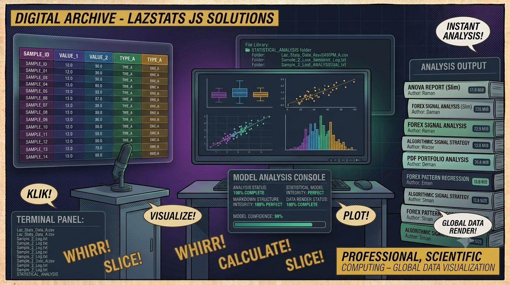

← Torna ai progettiLazStats JS
Piattaforma di analisi statistica completa nel browser: 6 famiglie di test (descrittiva, t-test, ANOVA, regressione, correlazione, chi-quadro), ognuna con controparte non parametrica. Spreadsheet editor, grafici Victory interattivi, normality diagnostics con Q-Q plot.
📖 Cos'è
LazStats JS è un ambiente di analisi statistica interamente browser-based. Offre un editor dati in stile spreadsheet con tipizzazione per colonna (numerico, intero, decimale, stringa, alpha, char, booleano, data) e validazione regex per cella. Sei famiglie di test statistici coprono l'intero spettro dell'analisi quantitativa, ciascuna con la sua controparte non parametrica: Statistica Descrittiva con test di normalità Jarque-Bera e Kolmogorov-Smirnov e Q-Q plot; T-Test (one-sample, indipendente, paired) con Wilcoxon Signed-Rank e Mann-Whitney U; ANOVA one-way con Kruskal-Wallis H e post-hoc Bonferroni; Regressione OLS con stimatore robusto Theil-Sen e diagnostica avanzata dei residui; Correlazione (Pearson, Spearman, Kendall's Tau-b); Chi-Quadro con correzione di Yates e Fisher's Exact Test. I risultati appaiono in una console cumulativa a tab con visualizzazioni Victory interattive.
👤 A chi serve
LazStats JS è per studenti e ricercatori che necessitano di un tool statistico accessibile senza installare software pesanti. Data analyst e data scientist possono esplorare rapidamente dataset con test parametrici e non parametrici affiancati. Docenti di statistica trovano uno strumento didattico per mostrare l'impatto della scelta del test sui risultati. Sviluppatori interessati a librerie statistiche JavaScript possono studiare un'implementazione completa di test non parametrici (Fisher's Exact, Theil-Sen, Kendall's Tau-b, Kruskal-Wallis) in TypeScript puro. Chiunque cerchi un'alternativa gratuita, open source e offline a SPSS, JASP o jamovi per analisi di base.
⚙️ Come funziona
1. Data Editor: Inserisci i dati nel foglio di calcolo integrato — aggiungi righe/colonne, imposta il tipo per ogni colonna e la validazione regex controlla ogni cella in tempo reale.
2. Configurazione: Seleziona l'analisi desiderata dalla sidebar, scegli le variabili dipendenti/indipendenti, imposta i parametri (intervallo di confidenza, test value, post-hoc, correzioni).
3. Calcolo: Tutte le statistiche sono calcolate client-side con jStat e le implementazioni custom in statsHelpers.ts (560+ linee di test non parametrici puri).
4. Output: I risultati appaiono nella console cumulativa — tabelle con statistiche, p-value, significatività, grafici Victory (boxplot, scatter, istogrammi, Q-Q plot, bar chart).
5. Diagnostica: Per regressione e normalità, ottieni test dei residui (JB, KS), confronto OLS vs Theil-Sen, rank space scatter plot.
✨ Caratteristiche
- 6 famiglie di test — Descrittiva, T-Test, ANOVA, Regressione, Correlazione, Chi-Quadro
- Parametrico + Non Parametrico — Ogni test offre entrambe le varianti affiancate
- Test non parametrici custom — Fisher's Exact, Wilcoxon, Mann-Whitney, Kruskal-Wallis, Theil-Sen, Kendall's Tau
- Spreadsheet editor — Griglia interattiva con 8 tipi di colonna e validazione regex per cella
- Diagnostica avanzata — Q-Q plot, test di normalità (JB + KS), analisi dei residui OLS e Theil-Sen
- Grafici Victory interattivi — Boxplot, scatter, istogrammi, bar chart, Q-Q plot con tooltip
- Console cumulativa — Output tabbati, risultati affiancabili, scroll automatico
- Dark theme nativo — Interfaccia scura ottimizzata per lunghe sessioni di analisi
🧪 Analisi Disponibili
| Analisi | Test Parametrico | Test Non Parametrico |
|---|---|---|
| Descrittiva | Media, Mediana, SD, Min, Max, Range, Varianza, Skewness, Kurtosis, IQR, Istogramma, Boxplot | Jarque-Bera, Kolmogorov-Smirnov (normalità), Q-Q Plot |
| T-Test | One-Sample, Independent, Paired | Wilcoxon Signed-Rank, Mann-Whitney U |
| ANOVA | One-Way ANOVA, Post-Hoc Tukey / Bonferroni | Kruskal-Wallis H, Post-Hoc Mann-Whitney con Bonferroni |
| Regressione | OLS (semplice e multipla), analisi residui | Theil-Sen (robust estimator) |
| Correlazione | Pearson (matrice + scatter) | Spearman's ρ, Kendall's Tau-b (matrici + rank scatter) |
| Chi-Quadro | Pearson Chi-Square, Yates correction | Fisher's Exact Test |
🏗️ Architettura
┌──────────────────────────────────────────────────────────┐ │ Browser │ │ ┌───────────┐ ┌──────────────┐ ┌──────────────────┐ │ │ │Data Editor│ │Analysis Panel│ │ Output Console │ │ │ │(Grid+Type)│ │(Config Form) │ │(Tables + Charts) │ │ │ └─────┬─────┘ └──────┬───────┘ └────────┬─────────┘ │ │ │ │ │ │ │ ┌─────┴───────────────┴───────────────────┴──────────┐ │ │ │ App.tsx (~3000 lines) │ │ │ └──┬──────────────────────────┬──────────────────────┘ │ │ │ │ │ │ ┌──▼──────────────┐ ┌───────▼──────────────────────┐ │ │ │ Victory Charts │ │ statsHelpers.ts (560 lines) │ │ │ │ (Box, Bar, │ │ Fisher, Wilcoxon, MWU, │ │ │ │ Scatter, QQ, │ │ KruskalWallis, TheilSen, │ │ │ │ Histogram) │ │ KendallTau, NormalityTests │ │ │ └─────────────────┘ └──────┬───────────────────────┘ │ │ │ │ │ ┌─────▼──────┐ │ │ │ jStat │ │ │ │ (stats) │ │ │ └────────────┘ │ └──────────────────────────────────────────────────────────┘
🔬 Test Non Parametrici Custom
Oltre a jStat per le statistiche di base, LazStats JS implementa da zero in TypeScript puro una suite completa di test non parametrici:
| Funzione | Test | Dettagli Implementativi |
|---|---|---|
calcFisherExact | Fisher's Exact Test | Probabilità esatta 2×2 via log-factorials, two-tailed con enumerazione completa |
calcWilcoxonSignedRank | Wilcoxon Signed-Rank | Rank con tie correction, approssimazione normale con continuity correction 0.5 |
calcMannWhitneyU | Mann-Whitney U | Rank-sum con average rank per ties, z-score con correzione di continuità |
calcKruskalWallis | Kruskal-Wallis H | Statistica H con tie correction, approssimazione chi-quadro |
calcTheilSen | Theil-Sen Estimator | Mediana delle slope pairwise, robusto agli outlier |
calcKendallTau | Kendall's Tau-b | Conteggio coppie concordanti/discordanti con tie adjustment |
calcNormalityTests | Jarque-Bera + K-S | JB via skewness/kurtosis, KS via max diff ECDF vs CDF teorica |
🔒 Privacy & Sicurezza
- Zero backend — Nessun server, nessun database, tutto client-side
- Dati locali — I dati inseriti non lasciano mai il browser
- Nessun tracking — Zero analytics, zero telemetria
- Offline completo — Funziona senza connessione internet dopo il primo caricamento